PhD, Nuclear Engineering
University of California, Berkeley
Concentration in Nuclear Physics with Nuclear Nonproliferation Policy minor
Dissertation: "Beta-delayed neutron studies of 137-138I and 144-145Cs performed with trapped ions"
My name is
Concentration in Nuclear Physics with Nuclear Nonproliferation Policy minor
Dissertation: "Beta-delayed neutron studies of 137-138I and 144-145Cs performed with trapped ions"
Thesis: "239Np(n,f) Cross Section Measurement Using the Surrogate Ratio Method."
Over nearly ten years of experience in experimental nuclear physics, I acquired a variety of practical skills relevant to engineering. I believe my range of skills, adaptability, aptitude for problem solving, and attention to detail complement work at the interface of hardware and software. The specific activities that were part of my research work can be summarized as follows:
Calibration, assembly, integration (and modification), testing,
Electronics, 3D printing, laser cutting, basic CNC milling, Arduino and Raspberry Pi embedded coding.
Integration of data from multiple sources, synchronization (trigger system setup with precise ns timing), utilization and modification of data acquisition code (
Designing, optimizing, and modeling parts for 3D printing and CNC milling; producing drawings (
Writing code to read, sort, and manage datasets (
Document preparation (scientific publications, presentations, conference posters, technical reports), data visualization and presentation (
Berlin, Germany
01/2019 - 06/2019
Over the 6-month internship at a hearables start-up, I gained and refined skills related to prototype development, including embedded software, integration with peripherals, GUI development, testing, and part design. I was responsible for a large array of tasks ranging from hardware to software, as well as research in audio technologies and hearing. I built and tested a hearing aid prototype based on the openMHA open source design that uses a Raspberry Pi and custom preamplifiers. As part of the internship, I participated in startup accelerator programs (AtomLeap and Health Validator).
Osaka, Japan
09/2016 - 04/2018
At the Research Center for Nuclear Physics I worked in support of experiments designed to study nuclear structure and the nature of interactions within the nucleus. The research is conducted using a cyclotron, a type of particle accelerator, that produces a beam of ions (for example, 3He). The beam is then directed into a scattering chamber where it interacts with a target (consisting of nuclei under study) undergoing nuclear reactions. The energy of the outgoing beam is then measured with a magnetic spectrometer, which in turn determines the energy of the nucleus during the reaction. Other particles emitted during the nuclear reactions, such as γ-rays, can be measured by numerous detectors to further study the nucleus.
As a postdoc at the lab, I supported the experimental programme of the facility, helping users set up and conduct their experiments. In this role, I was responsible for installing, operating, calibrating, and testing γ-ray detectors and data acquisition equipment. The commissioning CAGRA campaign of 2016 involved endless hours of troubleshooting and quick problem solving. Besides working on experiments, I tested and characterized a new data acquisition module (charge to time converter, or QTC) for recording output of a photomultiplier tube. This involved thorough testing of the module, characterization of its limitations, and modification of the readout code to correctly record the data. Along the instrumentation work, I analyzed spectroscopic data to reveal nuclear structure properties of mirror nuclei, 27Al and 27Si.
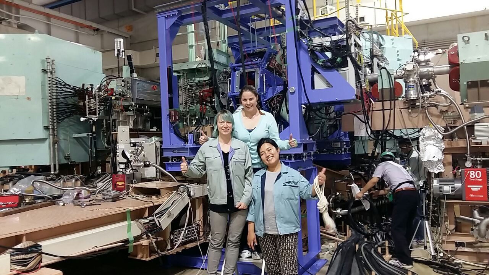
At RCNP in front of CAGRA detector frame. Beamline is visible on the top-right.
San Francisco, CA, USA
08/2015 - 12/2015
In order to gain some industry experience, I spend some free time helping develop the next prototype of Brightly – a wearable device that senses bladder fullness. I wrote a data logging script in embedded C for the ARM Cortex-M3 microcontroller using the UART protocol, and a real-time data display script with Python. The scripts were useful for testing and debugging of the first prototypes.
Livermore, CA, USA
05/2012 - 08/2016
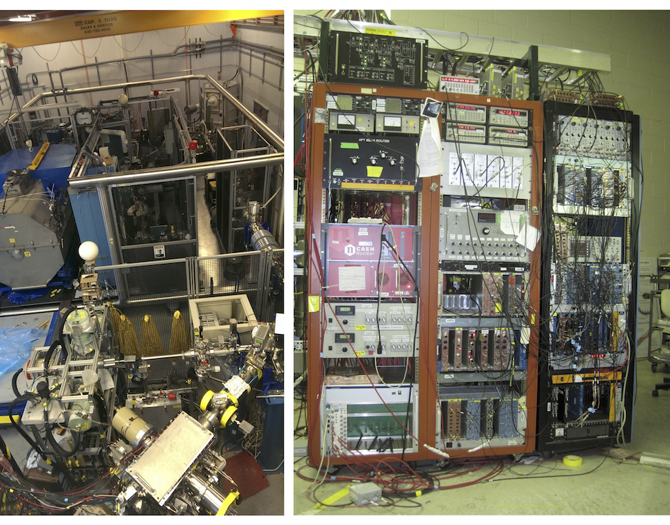
Left: experimental setup at Argonne National Lab, with the ion trap chamber visible on the bottom of the image. Right: signal processing and data acquisition system.
As a PhD student at UC Berkeley, I joined the experimental effort to develop an innovative detection technique for studying beta-delayed neutron emission. In the method, the nuclei under study are held in a vacuum using an ion trap. Upon β or β-delayed neutron decay (where a neutron is emitted), the recoiling ion leaves the trap and can be detected with the surrounding detector array. By measuring the time of flight of the recoil ion, its energy can be deduced, and hence the energy of the emitted neutron. The neutrons are therefore measured indirectly, which avoids problems associated with direct neutron detection. Since this is a new technique, a lot of work was spend developing, testing and optimizing the setup, giving me a great learning opportunity. The experiments were performed at Argonne National Lab in Chicago, IL.
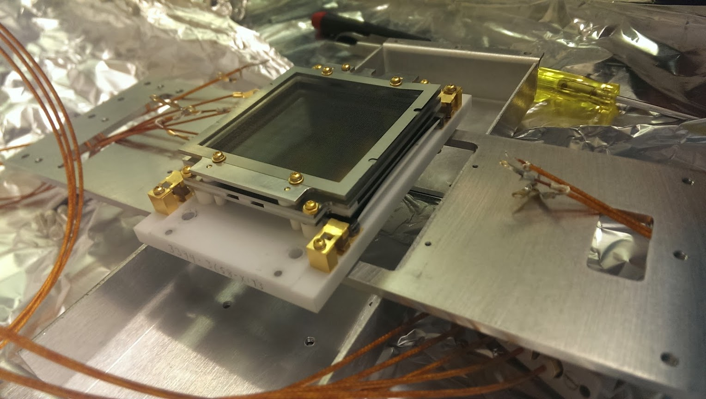
Microchannel plate (MCP) detector used for measuring ions.
My main responsibilities involved calibration and setting up of the entire detector apparatus, including γ, β, and ion detectors, and the configuration of signal processing and data acquisition systems. I extensively characterized the microchannel plate detectors used for ion detection, resolving uncovered inconsistencies (see MCP map image below). To understand the system, I carried out simulations with a Monte-Carlo modeling software Geant4 and ion-optics electrostatic field modeling in SimIon. Experimental data was analyzed in ROOT data analysis framework written in C++, and presented at conferences and in peer-reviewed articles.
To support my study, I received a competitive Livermore Graduate Scholar Fellowship from Lawrence Livermore National Laboratory, and was awarded the Physics Division Spot Award at LLNL in recognition of my efforts. My poster presetned at the ARIS conference was awarded the Best Poster Award.
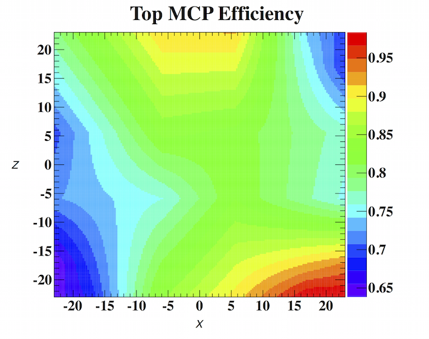
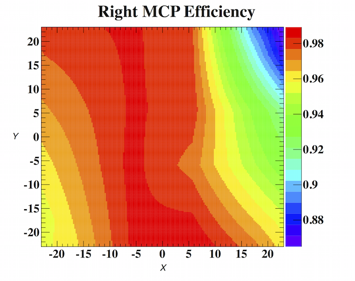
Normalized MCP efficiency maps deduced from analysis.
Berkeley, CA, USA
09/2009 - 05/2012
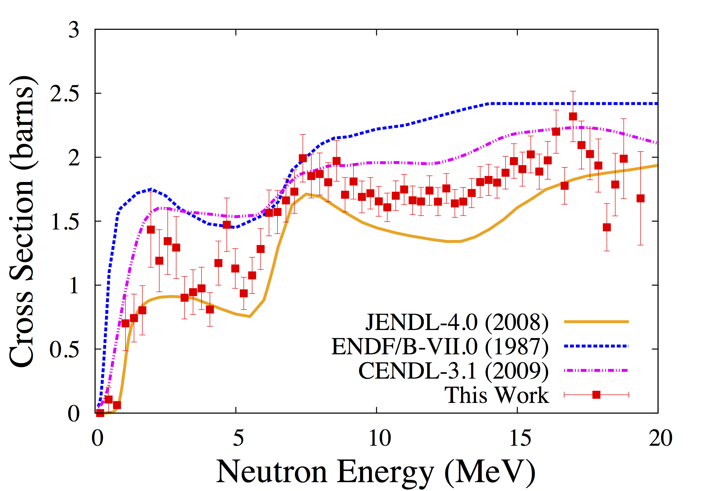
Results of the cross-section measurement with the Surrogate Ratio Method, compared to different calculations.
Cross-section in a nuclear reaction defines the interaction probability. Some cross-sections cannot be easily measured due to physical and technological limitations. As part of my Master’s project, I participated in an experiment to measure the cross-section of 239Np of neutron-induced fission. The measurement was accomplished by using the Surrogate Ratio Method technique that measures the cross-section indirectly. As part of the experimental work, I designed a detector holder part that optimized the detector performance. I also analyzed the dataset, writing analysis scripts in C++ from scratch, and performed statistical analysis to extract the results.
Research article, Copyright ©2013 American Physical Society
Founded the Kansai, Japan branch (Osaka, Kyoto, Nara, Kobe) of Nerd Nite. Nerd Nite is a casual, fun, educational event held across more than 100 citites worldwide. Several speakers give short presentations on anything from algebraic geometry, gene editing to the origin of role-playing games. As a co-boss, my responsibilities included finding the venue, coordinating speakers, and promotion.
Event Coordinator (elected) at the graduate student cooperative housing, Hillegass-Parker House, part of the BSC organization. Responsibilities included planning and facilitating events for 50+ students, ensuring personal safety and compliance with city regulations.
As a minor in graduate school, I pursued Nuclear Nonproliferation Policy, and attended several summer training courses on nuclear security, safeguards, treaty verification, and arms control. I gained experience in drafting policy memos, navigating international relations, and working at the interface between policy and technology. Courses included:
Brookhaven National Laboratory, Brookhaven, NY, USA (June 2013)
Pacific Northwest National Laboratory, Richland, WA, USA (June 2012)
International Atomic Energy Agency, Vienna, Austria (March 2012)
University of California, San Diego, CA, USA (July 2010)
As a scientist and art hobbyist, I’ve been interested in extrasensory perception and transformation of data from one sensory form into others. Below is a list of some personal projects I worked on/am working on currently.
Interactive wire sculpture with an optical theramin (built with photoresistors).
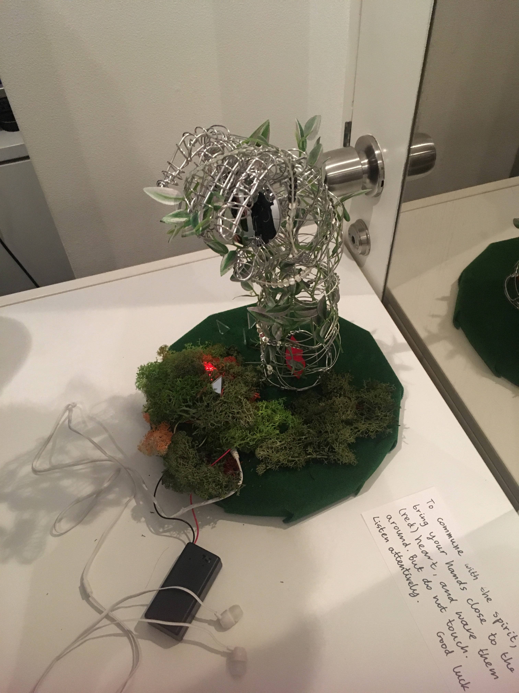
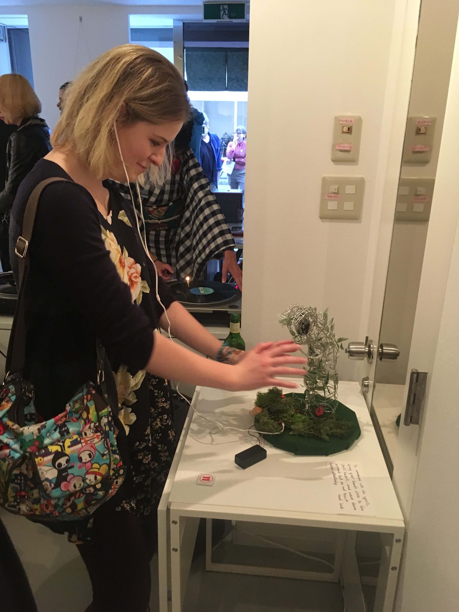
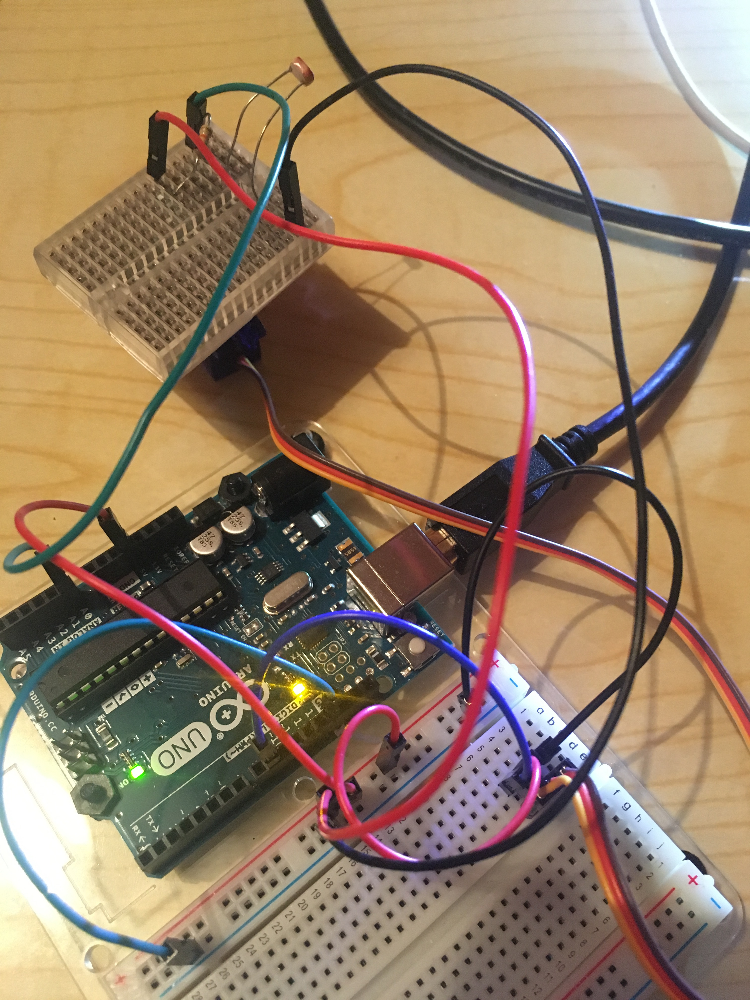
I built an "environmental scanner" that scans around the room, and records the data received by a sensor. At this point I did some testing with a photoresistor and a simple emf probe, but the next step will be to use a more complex elektrosluch for improved detection of electromagnetic fields emitted by everyday objects. The data is then read by the computer and undergoes spectral analysis with an FFT. The plan is to create an electromagneitc "map" of the room and present it as a visualization. 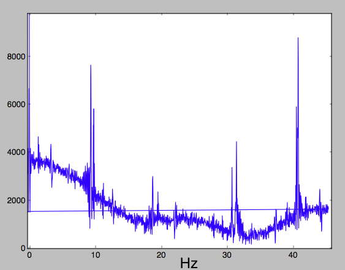 FFT of the ambient electromagnetic field, recorded with a simple emf probe.
I am building a Raspberry Pi recorder to combine with the electrosluch I built (for listening to electromagnetic fields around every day objects), as well as the optical theramin.
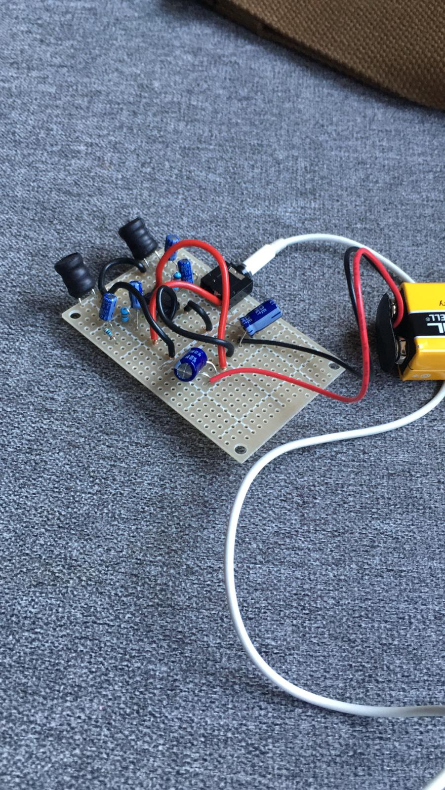
Electrosluch for listening to electromagnetic fields.
I enjoy hiking/camping, experimental music/analog synths, layman philosophy, and traveling. I take photos with an old Canon DSLR. Some of my recent activities are chronicled in the photo gallery.
For inquiries regarding collaboration or employment, please email me at agaczesz@gmail.com.
Site built using Boostrap 4.1.1
All work © Agnieszka Czeszumska 2019